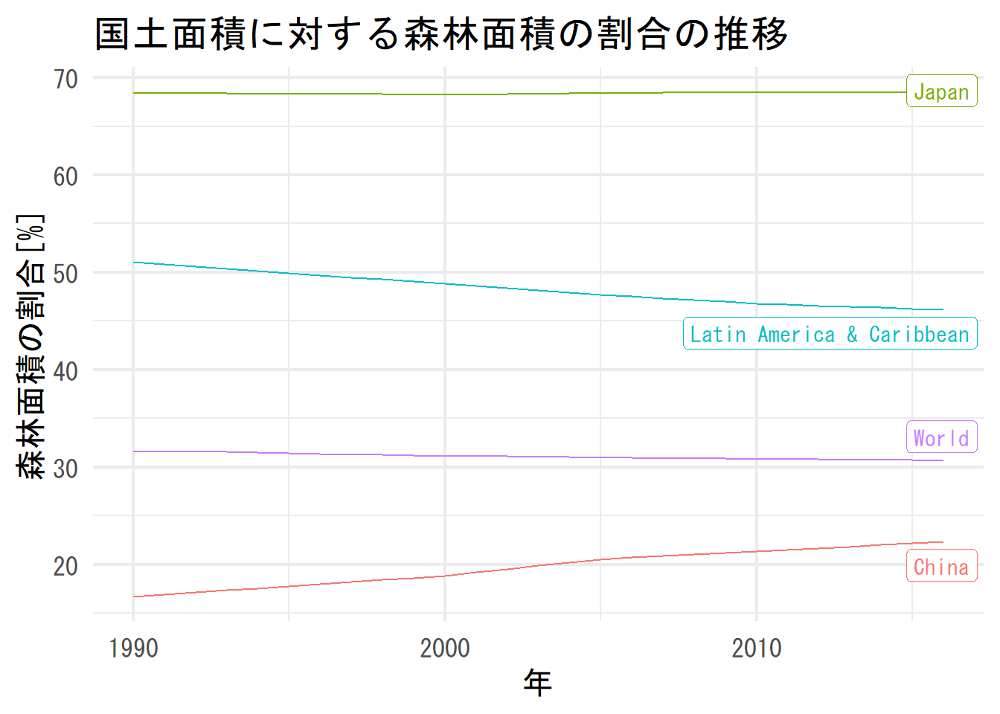

9 Webからのデータ取得（2）「World Bank API」
e-Statは日本の統計データを見る場合に利用しましたが、世界の国別の統計や指標を見たり比較したりする場合には世界銀行のウェブサイトが便利です。世界銀行のデータをAPI経由で取得するためのRのパッケージがwbstatsです。
使っているPCで初めて利用する場合は、
でインストールしてください。セッションを立ち上げた後（プロジェクトを立ち上げた後）には、
を実行してwbstatsの関数が利用できるようにしておきます。wb_cachelistは、利用可能な指標や国、トピックなどの一覧を保持しています。
## List of 8
## $ countries : tibble [304 x 18] (S3: tbl_df/tbl/data.frame)
## $ indicators : tibble [16,649 x 8] (S3: tbl_df/tbl/data.frame)
## $ sources : tibble [63 x 9] (S3: tbl_df/tbl/data.frame)
## $ topics : tibble [21 x 3] (S3: tbl_df/tbl/data.frame)
## $ regions : tibble [48 x 4] (S3: tbl_df/tbl/data.frame)
## $ income_levels: tibble [7 x 3] (S3: tbl_df/tbl/data.frame)
## $ lending_types: tibble [4 x 3] (S3: tbl_df/tbl/data.frame)
## $ languages : tibble [23 x 3] (S3: tbl_df/tbl/data.frame)利用可能な指標の一覧は以下のコマンドで確認できます。
| indicator_id | indicator | unit | indicator_desc | source_org | topics | source_id | source |
|---|---|---|---|---|---|---|---|
| 1.0.HCount.1.90usd | Poverty Headcount ($1.90 a day) | NA | The poverty headcount index measures the proportion of the population with daily per capita income (in 2011 PPP) below the poverty line. | LAC Equity Lab tabulations of SEDLAC (CEDLAS and the World Bank). | 11 , Poverty | 37 | LAC Equity Lab |
| 1.0.HCount.2.5usd | Poverty Headcount ($2.50 a day) | NA | The poverty headcount index measures the proportion of the population with daily per capita income (in 2005 PPP) below the poverty line. | LAC Equity Lab tabulations of SEDLAC (CEDLAS and the World Bank). | 11 , Poverty | 37 | LAC Equity Lab |
| 1.0.HCount.Mid10to50 | Middle Class ($10-50 a day) Headcount | NA | The poverty headcount index measures the proportion of the population with daily per capita income (in 2005 PPP) below the poverty line. | LAC Equity Lab tabulations of SEDLAC (CEDLAS and the World Bank). | 11 , Poverty | 37 | LAC Equity Lab |
| 1.0.HCount.Ofcl | Official Moderate Poverty Rate-National | NA | The poverty headcount index measures the proportion of the population with daily per capita income below the official poverty line developed by each country. | LAC Equity Lab tabulations of data from National Statistical Offices. | 11 , Poverty | 37 | LAC Equity Lab |
| 1.0.HCount.Poor4uds | Poverty Headcount ($4 a day) | NA | The poverty headcount index measures the proportion of the population with daily per capita income (in 2005 PPP) below the poverty line. | LAC Equity Lab tabulations of SEDLAC (CEDLAS and the World Bank). | 11 , Poverty | 37 | LAC Equity Lab |
| 1.0.HCount.Vul4to10 | Vulnerable ($4-10 a day) Headcount | NA | The poverty headcount index measures the proportion of the population with daily per capita income (in 2005 PPP) below the poverty line. | LAC Equity Lab tabulations of SEDLAC (CEDLAS and the World Bank). | 11 , Poverty | 37 | LAC Equity Lab |
データの検索はwb_search()関数を用います。
## # A tibble: 4 x 3
## indicator_id indicator indicator_desc
## <chr> <chr> <chr>
## 1 AG.LND.FRST.~ Forest area (hectare~ Forest area is land under natural or plan~
## 2 AG.LND.FRST.~ Forest area (sq. km) Forest area is land under natural or plan~
## 3 AG.LND.FRST.~ Forest area (% of la~ Forest area is land under natural or plan~
## 4 ER.FST.DFST.~ Annual deforestation~ Average annual deforestation refers to th~実際のデータの取得は、wb_data()関数を用います。indicator引数に取得したいデータのIDを指定します。
いくつかの国について、国土面積に対する森林面積の割合の推移を折れ線グラフとしてプロットしてみます。
fa_data %>%
filter(country %in% c("Japan", "World", "China",
"Latin America & Caribbean")) %>%
mutate(date = lubridate::ymd(date, truncated = 2)) %>%
rename(value = 5) %>%
filter(!is.na(value)) %>%
ggplot(aes(date, value, group = country, color = country)) +
geom_line() +
theme_minimal(base_size = 16) +
theme(legend.position = "bottom") +
labs(x = "年", y = "森林面積の割合[%]",
title = "国土面積に対する森林面積の割合の推移") +
gghighlight(label_params = list(direction = "y"))## label_key: country
次に、日本のCO2排出量の推移を見てみましょう。
## # A tibble: 6 x 9
## iso2c iso3c country date EN.ATM.CO2E.KT unit obs_status footnote
## <chr> <chr> <chr> <dbl> <dbl> <chr> <chr> <chr>
## 1 AW ABW Aruba 1960 11093. <NA> <NA> <NA>
## 2 AW ABW Aruba 1961 11577. <NA> <NA> <NA>
## 3 AW ABW Aruba 1962 12713. <NA> <NA> <NA>
## 4 AW ABW Aruba 1963 12178. <NA> <NA> <NA>
## 5 AW ABW Aruba 1964 11841. <NA> <NA> <NA>
## 6 AW ABW Aruba 1965 10623. <NA> <NA> <NA>
## # ... with 1 more variable: last_updated <date>co2_data %>%
filter(country == "Japan") %>%
mutate(date = lubridate::ymd(date, truncated = 2)) %>%
rename(value = 5) %>%
filter(!is.na(value)) %>%
ggplot(aes(date, value)) +
geom_area(alpha = 0.7) +
theme_minimal(base_size = 16) +
labs(x = "年", y = "CO2排出量[kt]",
title = "日本のCO2排出量の推移")